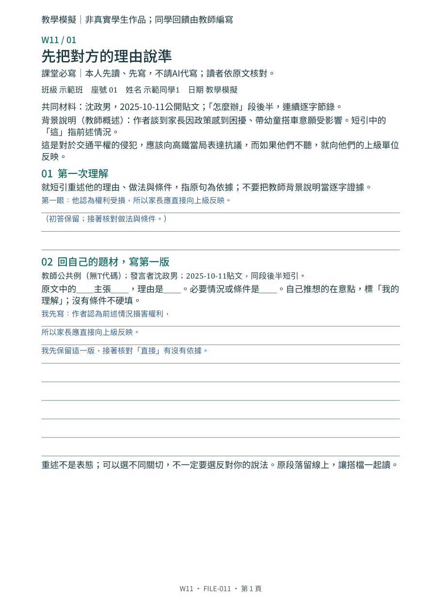
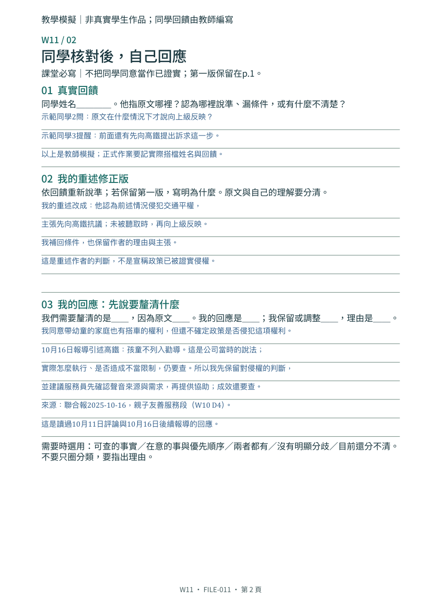
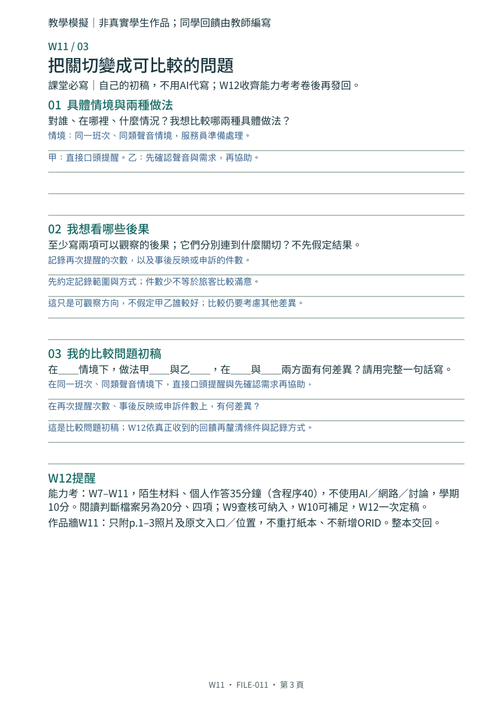
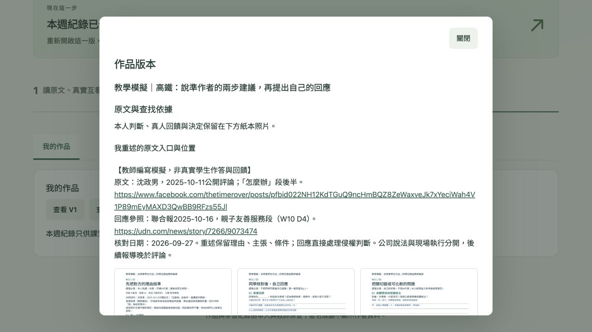

教師編寫的完整模擬，非真實學生作品。初答、模擬同學的提醒、修正、本人回應與比較問題，依序保留在p.1–3；不能照抄成自己的回饋。沒有唯一立場或標準問題。



本機虛構帳號操作截圖，非真實學生資料。

依序附這三頁，只另貼原文入口與位置。按保存後重新開啟確認。若沒有按保存，表單不等於已備份。
沈政男，2025-10-11公開評論；位置：「怎麼辦」段後半。紙本保留同段逐字短引；背景說明另標教師概述。開啟原貼文。
本人回應另參照W10 D4：聯合報2025-10-16親子友善服務段。後續報導晚於10月11日評論；公司說法不等於現場已落實。